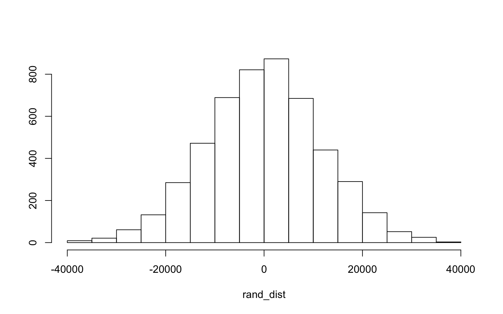
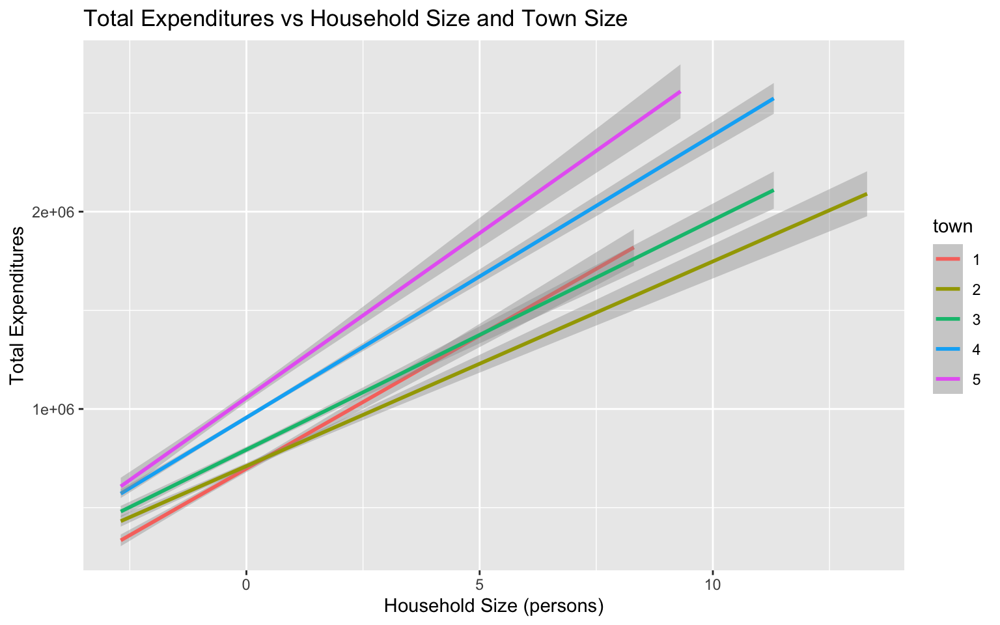
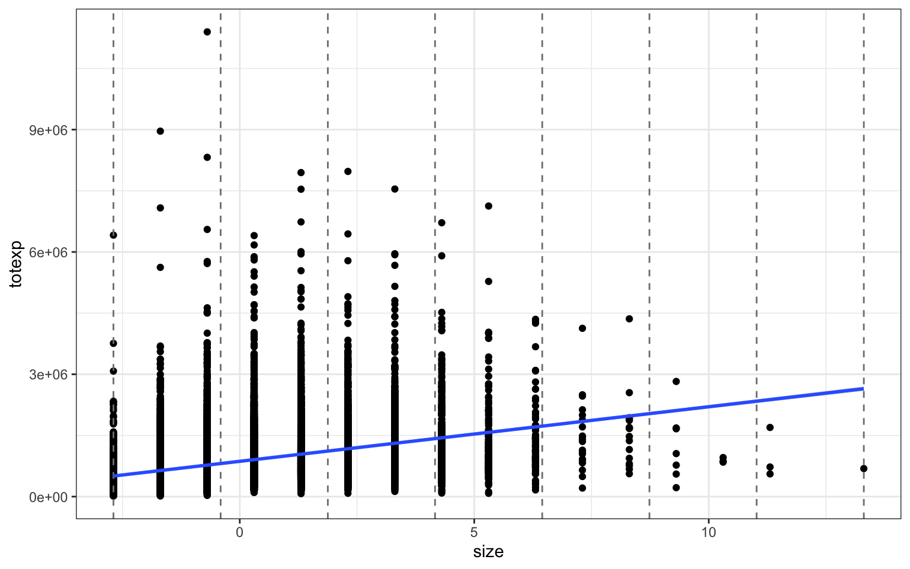
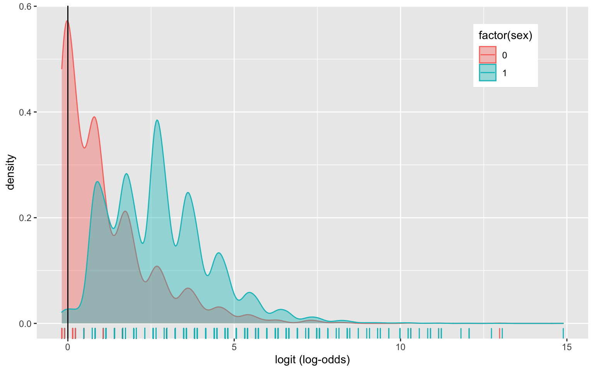
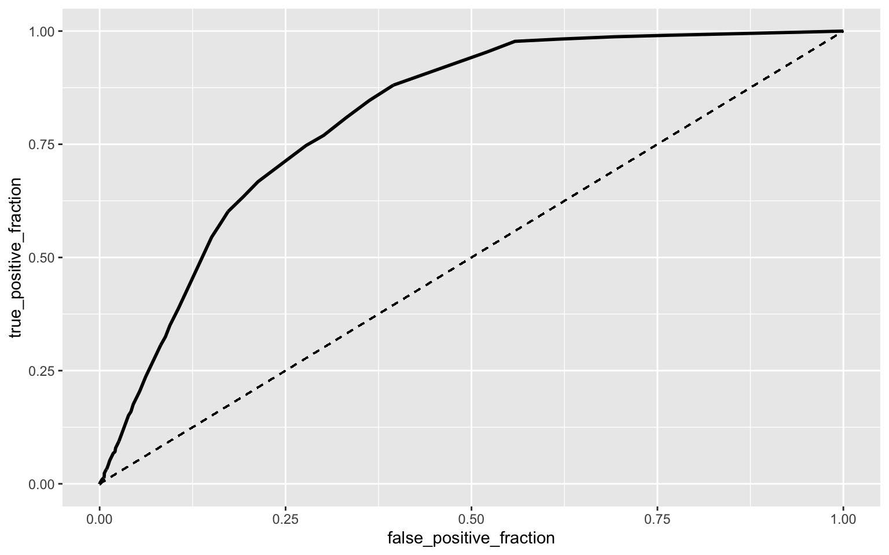

Paul Sathuluri pvs297
The following dataset from 1980 contains 23972 observations and provides information on the budget share of food for Spanish households. Each entry in the dataset corresponds to a specific Spanish household. The data is sourced from the Journal of Applied Econometrics by means of the ‘Ecdat’ econometrics R package. The variables include wfood (percentage of total expenditure which the household has spent on food), totexp (total expenditure of the household), age (age of reference person in the household), size (number of people in the household), town (size of the town where the household is placed ranging from 1 for small towns to 5 for large towns), and sex (sex of reference person). I am removing one entry in the dataset because it contains a significant outlier in the size field (33 people when the mean is 3.69 and the next highest is 17 people) as well as NA in the sex field.
budget <- BudgetFood
budget <- na.omit(budget)
head(budget)## wfood totexp age size town sex
## 1 0.4676991 1290941 43 5 2 man
## 2 0.3130226 1277978 40 3 2 man
## 3 0.3764819 845852 28 3 2 man
## 4 0.4396909 527698 60 1 2 woman
## 5 0.4036149 1103220 37 5 2 man
## 6 0.1992503 1768128 35 4 2 manman1<-manova(cbind(wfood,totexp)~town, data=budget)
summary(man1)## Df Pillai approx F num Df den Df Pr(>F)
## town 1 0.078097 1015.2 2 23968 < 2.2e-16 ***
## Residuals 23969
## ---
## Signif. codes: 0 '***' 0.001 '**' 0.01 '*' 0.05 '.' 0.1
' ' 1summary.aov(man1) ## Response wfood :
## Df Sum Sq Mean Sq F value Pr(>F)
## town 1 46.38 46.379 1818.4 < 2.2e-16 ***
## Residuals 23969 611.34 0.026
## ---
## Signif. codes: 0 '***' 0.001 '**' 0.01 '*' 0.05 '.' 0.1
' ' 1
##
## Response totexp :
## Df Sum Sq Mean Sq F value Pr(>F)
## town 1 4.2245e+14 4.2245e+14 1115.3 < 2.2e-16 ***
## Residuals 23969 9.0784e+15 3.7876e+11
## ---
## Signif. codes: 0 '***' 0.001 '**' 0.01 '*' 0.05 '.' 0.1
' ' 1budget%>%group_by(town)%>%summarize(mean(wfood),mean(totexp))## # A tibble: 5 x 3
## town `mean(wfood)` `mean(totexp)`
## <dbl> <dbl> <dbl>
## 1 1 0.460 643382.
## 2 2 0.423 711009.
## 3 3 0.392 816568.
## 4 4 0.345 965311.
## 5 5 0.325 1037831.pairwise.t.test(budget$wfood, budget$town, p.adj = "none")##
## Pairwise comparisons using t tests with pooled SD
##
## data: budget$wfood and budget$town
##
## 1 2 3 4
## 2 < 2e-16 - - -
## 3 < 2e-16 < 2e-16 - -
## 4 < 2e-16 < 2e-16 < 2e-16 -
## 5 < 2e-16 < 2e-16 < 2e-16 2.8e-09
##
## P value adjustment method: nonepairwise.t.test(budget$totexp, budget$town, p.adj = "none")##
## Pairwise comparisons using t tests with pooled SD
##
## data: budget$totexp and budget$town
##
## 1 2 3 4
## 2 6.7e-06 - - -
## 3 < 2e-16 5.0e-15 - -
## 4 < 2e-16 < 2e-16 < 2e-16 -
## 5 < 2e-16 < 2e-16 < 2e-16 3.1e-08
##
## P value adjustment method: noneA one-way MANOVA was conducted to determine the effect of the town size (1, 2, 3, 4, 5) on two dependent variables (Total Expenditure and Percent Spent on Food).
Significant differences were found among the five town sizes for at least one of the dependent variables, Pillai trace = 0.078, pseudo F (2, 23969) = 1015.2, p < 0.0001.
Univariate ANOVAs for each dependent variable were conducted as follow-up tests to the MANOVA, using the Bonferroni method for controlling Type I error rates for multiple comparisons. The univariate ANOVAs for Percent Spent on Food and Total Expenditure were also significant, F (1, 23970) = 1818.4, p < .0001, and F (1, 23970) = 1115.3, p < .0001, respectively.
Post hoc analysis was performed conducting pairwise comparisons to determine which Town Sizes differed in Total Expenditure and Percent Spent on Food. Overall, there was 1 MANOVA, 2 ANOVAs, and 20 t tests conducted for a total of 23 tests. The probability of at least one Type 1 error is 1 - 0.95^23 = 0.693. All five Town Sizes were found to differ significantly from each other in terms of Total Expenditure and Percent Spent on Food even after adjusting for multiple comparisons (bonferroni α = .05/23 = 0.0021).
set.seed(348)
sampleData <- sample_n(budget, 4000, replace = FALSE)
group <- sampleData$town
DVs <- sampleData %>% select(totexp,wfood)
#Test multivariate normality for each group (null: assumption met)
sapply(split(DVs,group), mshapiro_test)## 1 2 3 4 5
## statistic 0.7368225 0.8693437 0.7691442 0.8089017
0.779224
## p.value 8.991324e-27 5.967099e-24 3.752283e-30
2.013452e-40 1.799589e-24The multivariate normality assumption was not met via the Shapiro-Wilk test, as p < 0.05 for every group.
Null Hypothesis: Mean total household expenditures is the same for households with a male vs female reference person Alternative Hypothesis: Mean total household expenditures are different for households with a male vs female reference person
rand_dist<-vector()
for(i in 1:5000){
new<-data.frame(totexp=sample(budget$totexp),sex=budget$sex) #scramble columns
rand_dist[i]<-mean(new[new$sex=="man",]$totexp)-
mean(new[new$sex=="woman",]$totexp)} #compute mean difference (base R)
budget%>%group_by(sex)%>%summarize(means=mean(totexp))%>%summarize(`mean_diff`=diff(means))## # A tibble: 1 x 1
## mean_diff
## <dbl>
## 1 -351020.{hist(rand_dist,main="",ylab=""); abline(v = c(-351020, 351020),col="red")} 
mean(rand_dist>351020 | rand_dist < -351020 ) ## [1] 0t.test(data=budget,totexp~sex)##
## Welch Two Sample t-test
##
## data: totexp by sex
## t = 35.639, df = 5183.2, p-value < 2.2e-16
## alternative hypothesis: true difference in means is not
equal to 0
## 95 percent confidence interval:
## 331711.1 370328.9
## sample estimates:
## mean in group man mean in group woman
## 914568.3 563548.3p < 0.05, indicating we reject the null hypothesis as Mean total household expenditures are different for households with a male vs female reference person. The overall calculated mean difference of +351020 and -351020 fall outside the bounds of the histogram, so the red lines are not visible.
# Mean Centering of numeric variables
budget <- BudgetFood %>% na.omit()
budget$town <- factor(budget$town)
budget$size <- budget$size - mean(budget$size, na.rm = T)
fit <- lm(totexp~town*size, data = budget)
summary(fit)##
## Call:
## lm(formula = totexp ~ town * size, data = budget)
##
## Residuals:
## Min 1Q Median 3Q Max
## -1837061 -330948 -125970 193305 10540521
##
## Coefficients:
## Estimate Std. Error t value Pr(>|t|)
## (Intercept) 697669 10830 64.420 < 2e-16 ***
## town2 13100 14079 0.930 0.352124
## town3 95916 13859 6.921 4.60e-12 ***
## town4 258612 12246 21.117 < 2e-16 ***
## town5 359357 15215 23.618 < 2e-16 ***
## size 134974 6175 21.857 < 2e-16 ***
## town2:size -31266 7870 -3.973 7.12e-05 ***
## town3:size -18595 7713 -2.411 0.015916 *
## town4:size 8121 6985 1.163 0.244963
## town5:size 31861 8932 3.567 0.000362 ***
## ---
## Signif. codes: 0 '***' 0.001 '**' 0.01 '*' 0.05 '.' 0.1
' ' 1
##
## Residual standard error: 568000 on 23961 degrees of
freedom
## Multiple R-squared: 0.1865, Adjusted R-squared: 0.1861
## F-statistic: 610.2 on 9 and 23961 DF, p-value: < 2.2e-16Controlling for Household Size, Total Expenditures is on average 13100 units higher for households in a town size of 2 compared to a town size of 1. Controlling for Household Size, Total Expenditures is on average 95916 units higher for households in a town size of 3 compared to a town size of 1. Controlling for Household Size, Total Expenditures is on average 258612 units higher for households in a town size of 4 compared to a town size of 1. Controlling for Household Size, Total Expenditures is on average 359357 units higher for households in a town size of 5 compared to a town size of 1. In households in a town size of 1, for every 1 unit increase in household size, there is on average a 134974 increase in Total Expenditures. The slope for household size on total expenditures is 31266 less for households in a town of size 2 compared to a town size of 1. The slope for household size on total expenditures is 18595 less for households in a town of size 3 compared to a town size of 1. The slope for household size on total expenditures is 8121 greater for households in a town of size 4 compared to a town size of 1. The slope for household size on total expenditures is 31861 greater for households in a town of size 5 compared to a town size of 1.
ggplot(budget, aes(x=size, y=totexp, group=town, color = town)) +
geom_smooth(method="lm") +
xlab("Household Size (persons)") +
ylab("Total Expenditures") +
ggtitle("Total Expenditures vs Household Size and Town Size")
breaks <- seq(min(budget$size), max(budget$size), len=8)
ggplot(budget, aes(size, totexp)) +
geom_point() +
theme_bw()+
geom_vline(xintercept=breaks, lty=2,color='gray50')+
geom_smooth(method='lm')
ks.test(fit$residuals, "pnorm", mean=0, sd(fit$residuals))##
## One-sample Kolmogorov-Smirnov test
##
## data: fit$residuals
## D = 0.12522, p-value < 2.2e-16
## alternative hypothesis: two-sidedbptest(fit)##
## studentized Breusch-Pagan test
##
## data: fit
## BP = 205.63, df = 9, p-value < 2.2e-16Looking at the scatterplot and regression line, it appears that no assumptions have been met. The data points do not appear to be linear, the residuals do not appear to be normally distributed, and the points fan out towards the start of the regression line, violating linearity, normality, and homoskedasticity. This is also proven by the results of the Kolmogorov-Smirnov and Breusch-Pagan tests, as in both cases p < 0.05 indicating the model is neither normal nor homoskedastic.
fit<-lm(totexp~size*town,data=budget)
summary(fit)##
## Call:
## lm(formula = totexp ~ size * town, data = budget)
##
## Residuals:
## Min 1Q Median 3Q Max
## -1837061 -330948 -125970 193305 10540521
##
## Coefficients:
## Estimate Std. Error t value Pr(>|t|)
## (Intercept) 697669 10830 64.420 < 2e-16 ***
## size 134974 6175 21.857 < 2e-16 ***
## town2 13100 14079 0.930 0.352124
## town3 95916 13859 6.921 4.60e-12 ***
## town4 258612 12246 21.117 < 2e-16 ***
## town5 359357 15215 23.618 < 2e-16 ***
## size:town2 -31266 7870 -3.973 7.12e-05 ***
## size:town3 -18595 7713 -2.411 0.015916 *
## size:town4 8121 6985 1.163 0.244963
## size:town5 31861 8932 3.567 0.000362 ***
## ---
## Signif. codes: 0 '***' 0.001 '**' 0.01 '*' 0.05 '.' 0.1
' ' 1
##
## Residual standard error: 568000 on 23961 degrees of
freedom
## Multiple R-squared: 0.1865, Adjusted R-squared: 0.1861
## F-statistic: 610.2 on 9 and 23961 DF, p-value: < 2.2e-16coeftest(fit, vcov = vcovHC(fit))##
## t test of coefficients:
##
## Estimate Std. Error t value Pr(>|t|)
## (Intercept) 697669.4 10287.2 67.8195 < 2.2e-16 ***
## size 134973.6 6695.3 20.1593 < 2.2e-16 ***
## town2 13100.4 13017.8 1.0064 0.3142567
## town3 95916.5 12859.3 7.4589 9.021e-14 ***
## town4 258612.0 11927.0 21.6829 < 2.2e-16 ***
## town5 359356.7 16212.9 22.1648 < 2.2e-16 ***
## size:town2 -31266.2 8290.9 -3.7712 0.0001629 ***
## size:town3 -18595.4 8385.4 -2.2176 0.0265929 *
## size:town4 8121.3 7859.6 1.0333 0.3014740
## size:town5 31861.3 11608.7 2.7446 0.0060627 **
## ---
## Signif. codes: 0 '***' 0.001 '**' 0.01 '*' 0.05 '.' 0.1
' ' 1There are minor variations in standard error, but overall there were no changes in significance when using robust standard errors vs without. town2 and the interaction size:town4 in both cases have a p value of 0.05 This indicates a failure to find a significant difference between a town of size 2 and total expenditures, as well as on the slope of household size on total expenditures between a town of size 1 and a town of size 4. According to the r^2 value, this linear model accounts for 0.186 of the variation in the outcome.
boot_dat<- sample_frac(budget, replace=T)
# repeat 5000 times
samp_distn<-replicate(500, {
boot_dat <- sample_frac(budget, replace=T) #take bootstrap sample of rows
fit<-lm(totexp~size*town,data=boot_dat) #fit model on bootstrap sample
coef(fit) #save coefs
})
## Estimated SEs
samp_distn %>% t %>% as.data.frame %>% summarize_all(sd)## (Intercept) size town2 town3 town4 town5 size:town2
size:town3 size:town4
## 1 10543.42 6845.107 12855.38 12719.69 12276.01 16230.81
8327.525 8522.921 7856.363
## size:town5
## 1 11543.14Overall there appears to be an increase between original SE and robust SE, and little to no increase between robust SE and bootstrapped SE. The p value went up across all as well.
budget <- budget %>% mutate(sex=recode(sex, "man" = 1,"woman" = 0))
fit<-glm(sex~town+size, data=budget, family="binomial")
coeftest(fit)##
## z test of coefficients:
##
## Estimate Std. Error z value Pr(>|z|)
## (Intercept) 2.949650 0.066221 44.5425 < 2.2e-16 ***
## town2 -0.255333 0.078812 -3.2398 0.001196 **
## town3 -0.335488 0.078416 -4.2783 1.883e-05 ***
## town4 -0.580522 0.067423 -8.6101 < 2.2e-16 ***
## town5 -0.663683 0.081345 -8.1589 3.381e-16 ***
## size 0.916627 0.018509 49.5227 < 2.2e-16 ***
## ---
## Signif. codes: 0 '***' 0.001 '**' 0.01 '*' 0.05 '.' 0.1
' ' 1Controlling for size of the household, the likelihood of a male reference person in a town of size 2 is -0.255333 times that of a town of size 1. Controlling for size of the household, the likelihood of a male reference person in a town of size 3 is -0.335488 times that of a town of size 1. Controlling for size of the household, the likelihood of a male reference person in a town of size 4 is -0.580522 times that of a town of size 1. Controlling for size of the household, the likelihood of a male reference person in a town of size 5 is -0.663683 times that of a town of size 1. Larger towns are more likely to have a female reference person for a given household. Controlling for town size, for every 1 person increase in the size of a household there is a 0.9167 increase in the likelihood of a male reference person. More people in a household increases the likelihood of a male reference person.
probs<-predict(fit,type="response") #get predicted probs from the model
#let's use .5 as our threshold for predicting malignant
table(predict=as.numeric(probs>.5),truth=budget$sex)%>%addmargins## truth
## predict 0 1 Sum
## 0 785 190 975
## 1 2562 20434 22996
## Sum 3347 20624 23971ROCplot<-ggplot(budget)+geom_roc(aes(d=sex,m=probs), n.cuts=0)+
geom_segment(aes(x=0,xend=1,y=0,yend=1),lty=2)
calc_auc(ROCplot)## PANEL group AUC
## 1 1 -1 0.8103173Compute and discuss the Accuracy, Sensitivity (TPR), Specificity (TNR), Precision (PPV), and AUC of your model (5) Accuracy is (785 + 20434)/23971 = 0.8852 Sensitivity is 20434/20624 = 0.9908 Specificity is 785/3347 = 0.2345 Precision is 20434/22996 = 0.8886 AUC is 0.8103, which is classified as “Good”
budget$logit<-predict(fit,type="link")
budget%>%ggplot()+geom_density(aes(logit,color=factor(sex),fill=factor(sex)), alpha=.4)+
theme(legend.position=c(.85,.85))+geom_vline(xintercept=0)+xlab("logit (log-odds)")+
geom_rug(aes(logit,color=factor(sex))) Density Plot of log-odds above
probs<-predict(fit,type="response") #get predicted probs from the model
ROCplot<-ggplot(budget)+geom_roc(aes(d=sex,m=probs), n.cuts=0)+
geom_segment(aes(x=0,xend=1,y=0,yend=1),lty=2)
ROCplot
calc_auc(ROCplot)## PANEL group AUC
## 1 1 -1 0.8103173With an AUC of 0.8103, the model does a good job of predicting sex of the reference person based on Size of the Town and Number of People in the Household.
budget <- BudgetFood %>% na.omit()
budget$size <- budget$size - mean(budget$size, na.rm = T)
budget$wfood <- budget$wfood - mean(budget$wfood, na.rm = T)
budget$age <- budget$age - mean(budget$age, na.rm = T)
budget$totexp <- budget$totexp - mean(budget$totexp, na.rm = T)
budget <- budget %>% mutate(sex=recode(sex, "man" = 1,"woman" = 0))
fit<-glm(sex~., data=budget, family="binomial")
coeftest(fit)##
## z test of coefficients:
##
## Estimate Std. Error z value Pr(>|z|)
## (Intercept) 3.2347e+00 6.8292e-02 47.3661 < 2.2e-16 ***
## wfood 3.8844e-01 1.4089e-01 2.7571 0.005832 **
## totexp 5.1379e-07 6.0176e-08 8.5380 < 2.2e-16 ***
## age -1.4331e-02 1.4982e-03 -9.5652 < 2.2e-16 ***
## size 7.4672e-01 2.1493e-02 34.7418 < 2.2e-16 ***
## town -2.2426e-01 1.7610e-02 -12.7348 < 2.2e-16 ***
## ---
## Signif. codes: 0 '***' 0.001 '**' 0.01 '*' 0.05 '.' 0.1
' ' 1probs<-predict(fit,type="response") #get predicted probs from the model
class_diag(probs,budget$sex) ## acc sens spec ppv f1 auc
## 1 0.8865296 0.9924845 0.2336421 0.8886429 0.9376976
0.8123514Accuracy: 0.8865296 Sensitivity: 0.9924845 Specificity: 0.2336421 Precision: 0.8886429 AUC: 0.81235 With an AUC of 0.81235, the model does a good job of predicting sex of the reference person based on the remaining variables (wfood, totexp, size, age, town)
set.seed(1234)
k=10 #choose number of folds
data<-budget[sample(nrow(budget)),] #randomly order rows
folds<-cut(seq(1:nrow(budget)),breaks=k,labels=F) #create folds
diags<-NULL
for(i in 1:k){
## Create training and test sets
train<-data[folds!=i,]
test<-data[folds==i,]
truth<-test$sex ## Truth labels for fold i
## Train model on training set (all but fold i)
fit<-glm(sex~., data=budget, family="binomial")
## Test model on test set (fold i)
probs<-predict(fit,newdata = test,type="response")
## Get diagnostics for fold i
diags<-rbind(diags,class_diag(probs,truth))
}
summarize_all(diags,mean) ## acc sens spec ppv f1 auc
## 1 0.8865293 0.9924839 0.2336594 0.8886482 0.937692
0.8123478Accuracy: 0.8865293
Sensitivity: 0.9924839
Specificity: 0.2336594
Precision: 0.8886482
AUC: 0.81235
With an AUC of 0.81235, the 10-fold cross validation model does a good job of predicting sex of the reference person based on the remaining variables (wfood, totexp, size, age, town). Classification diagnostics and AUC are both almost identical to the in-sample metrics.
set.seed(1234)
# your code here
fit <- glm(sex~., data = budget, family="binomial")
b_preds <- model.matrix(sex~ -1+., data=budget)
b_preds <- scale(b_preds)
responseMatrix <- as.matrix(budget$sex)
cv.lasso1<-cv.glmnet(x=b_preds,y=responseMatrix,family="binomial")
lasso_fit<-glmnet(x=b_preds,y=responseMatrix,family="binomial",lambda=cv.lasso1$lambda.1se)
coef(lasso_fit)## 6 x 1 sparse Matrix of class "dgCMatrix"
## s0
## (Intercept) 2.3109715
## wfood .
## totexp 0.1131708
## age -0.1640438
## size 1.1797280
## town -0.1260759According to lasso, the best predictors for Sex of the reference person are Total Expenditures, Age of reference person, Size of Household, and Size of Town. Proportion of expenditures spent on food was dropped as a predictor.
set.seed(1234)
k=10 #choose number of folds
data<-budget[sample(nrow(budget)),] #randomly order rows
folds<-cut(seq(1:nrow(budget)),breaks=k,labels=F) #create folds
diags<-NULL
for(i in 1:k){
## Create training and test sets
train<-data[folds!=i,]
test<-data[folds==i,]
truth<-test$sex ## Truth labels for fold i
## Train model on training set (all but fold i)
fit<-glm(sex~totexp+age+size+town, data=budget, family="binomial")
## Test model on test set (fold i)
probs<-predict(fit,newdata = test,type="response")
## Get diagnostics for fold i
diags<-rbind(diags,class_diag(probs,truth))
}
summarize_all(diags,mean) ## acc sens spec ppv f1 auc
## 1 0.886571 0.9932116 0.2294437 0.8881811 0.9377569
0.8124467Accuracy: 0.886571
Sensitivity: 0.9932116
Specificity: 0.2294437
Precision: 0.8881811
AUC: 0.81244
With an AUC of 0.81244, the 10-fold cross validation model does a good job of predicting sex of the reference person. This out-of-sample AUC is 0.0001 higher than that of the previous logistic regressions. Although very slightly better, all the regressions have almost identical AUCs. Accuracy is 0.00005 higher, Sensitivity is 0.001 higher, and Precision is 0.0005 lower compared to previous regressions. Overall and for all practical purposes, the 10-fold cross validation model with lasso-chosen predictors has identical metrics and AUCs to the 10-fold CV and Logistic models with all predictors.